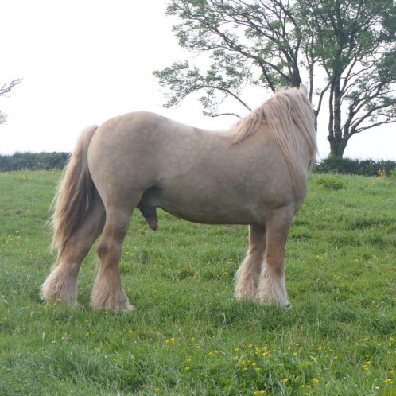
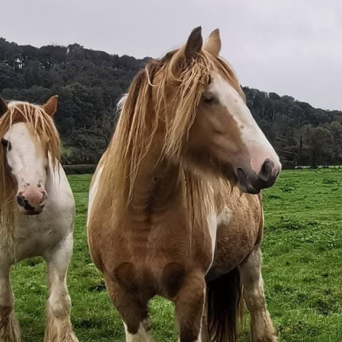

À vendre par Le Cros de l'Oume
6
À vendre par Le Cros de l'Oume
6
Qinaï de L'Oume
Fils d'Avantgarde × Mystic de L'Oume. Né le 13 mai 2026. Élevage Le Cros de l'Oume. Un poulain d'une grande douceur.
Voir les 6 photosOuvert aux saillies


San Cler Avantgarde est avant tout un rêve devenu réalité. Douze années auront été nécessaires pour voir ce projet prendre vie. Derrière sa robe spectaculaire se cache un cheval doux, proche de l'homme et respectueux, tout ce que l'on peut attendre d'un gypsy cob.
Vice-champion de France des étalons 2025 à seulement trois ans lors de son premier concours, il apporte à l'élevage une génétique différente et complémentaire de celle d'Archy. Porteur du gène pearl, il ouvre également de nouvelles possibilités de robes pour les générations à venir.
Élevage Humming Cob
Autres descendants - Naissances extérieures
À vendre par Le Cros de l'Oume
6
Fils d'Avantgarde × Mystic de L'Oume. Né le 13 mai 2026. Élevage Le Cros de l'Oume. Un poulain d'une grande douceur.
Voir les 6 photos À vendre par Yasuke
6
À vendre par Yasuke
6
Fils d'Avantgarde x SD Ruby Jane, il est né le 23 mai 2026, en Bretagne, à l'Élevage Yasuke. Observateur, posé et réfléchi.
Voir les 6 photosSan Cler Avantgarde est issu de parents double pearl, lignée San Cler. Reconnue pour sa rigueur de sélection et la qualité des chevaux, cette lignée a largement contribué à façonner le Gypsy Cob Pearl. À l'origine de ce travail, Clive Hussell, un « petit-grand homme » dont la connaissance des lignées et du gène pearl m'a profondément marquée lors de notre rencontre. Les données ci-dessous sont extraites de son registre personnel.

PèreSan Cler Talk Of The Town
MèreSan Cler Uptown Girl